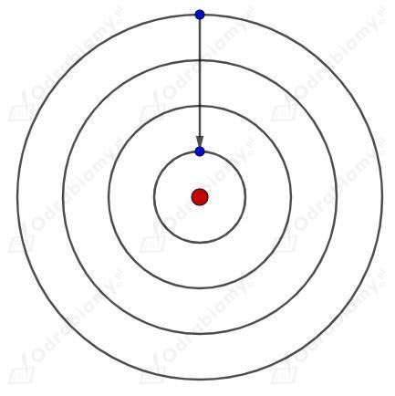
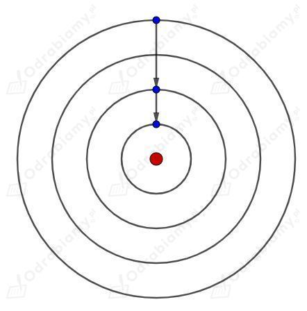
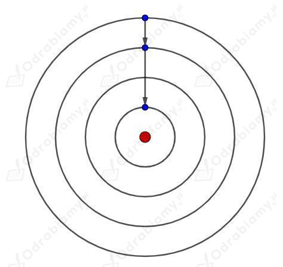
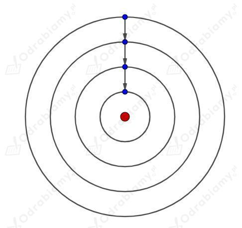

A. Energia elektronu w atomie II. może przyjmować tylko ściśle określone wartości.
A. Energia elektronu w atomie IV. jest inna na każdej orbicie.
A. Energia elektronu w atomie VIII. nie może być dowolna.
B. Elektron emituje (wysyła) foton V. gdy przeskakuje na niższą orbitę.
B. Elektron emituje (wysyła) foton VII. gdy jego energia się zmniejsza.
C. Elektron absorbuje (pochłania) foton I. gdy jego energia się zwiększa.
C. Elektron absorbuje (pochłania) foton III. ale tylko taki, który pozwala elektronowi wskoczyć na określoną orbitę.
C. Elektron absorbuje (pochłania) foton VI. gdy przeskakuje na wyższą orbitę.
D. Elektron nie może pochłonąć dowolnego fotonu III. ale tylko taki, który pozwala elektronowi wskoczyć na określoną orbitę.
Istnieją następujące możliwości powrotu elektronu na orbitę podstawową:




Energia jaką musi posiadać foton zdolny do jonizacji atomu wodoru jest równa:
Energię fotonu możemy wyrazić jako:
Wyznaczmy długość fali odpowiadającą fotonom zdolnym do jonizacji atomu wodoru:
Fotony tego promieniowania są z zakresu ultrafioletu.
Poniższa ikona po kliknięciu otwiera link zewnętrzny do filmu na YT.

Postacie występujące w filmie:
Postacie z którymi mogłeś się spotkać na lekcjach fizyki w szkole lub w innych źródłach: